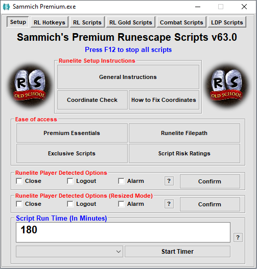
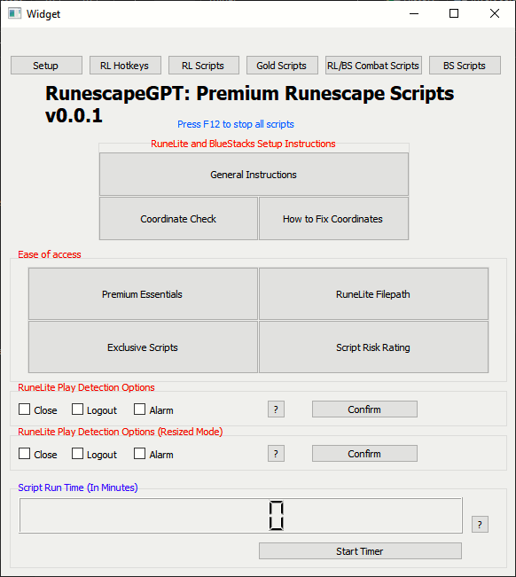

RunescapeGPT is a project I started in order to create an AI-powered color bot for Runescape with enhanced capabilities. I have been working on this project for a few days now, and I am excited to share my progress with you all. In this post, I will be discussing what I have done so far and what I plan to do next.
I have created a GUI for the bot using Qt Creator. It is a simple GUI that is inspired by Sammich's AHK bot. It has all the buttons provided by Sammich's bot.
Here is a screenshot of Sammich's GUI:

And here is the current state of RunescapeGPT's GUI:

Although the GUI is not fully functional yet, it lays a solid foundation. The next steps in development include adding actionable functionality to the buttons. Initially, we'll start with a single script that has a hotkey to send a screenshot to the AI model. This will be a key feature for monitoring the bot's activity and ensuring its smooth operation.
The script will capture the current state of the game, including what the bot is doing at any given time, and send this information along with a screenshot to the AI model. This multimodal approach will allow the AI to analyze both the textual data and the visual context of the game, enabling it to make informed decisions about the bot's next actions.
Real-time Monitoring: Integrate a system to always have a variable that reflects the bot's current action.
Activity Log and Reporting: Keep a detailed log of the bot's last movement, including timestamps and the duration between actions, to identify and understand if something unusual occurs.
AI-Powered Decision Making: In the event of anomalies or breaks, the information, including the screenshot, will be sent to an AI model equipped with multimodal capabilities. This model will analyze the situation and guide the bot accordingly.
By implementing these features, RunescapeGPT will become more than just a bot; it will be a sophisticated AI companion that navigates the game's challenges with unprecedented efficiency.
Stay tuned for more updates as the project evolves!
In the world of AI, language models have taken center stage for their ability to generate human-like text responses to a wide range of queries. NVIDIA's Nemotron-3-8B-Chat-SteerLM is one such model, offering a powerful tool for generative AI creators working on conversational AI models. Let's dive into the details of this model and understand how it works, its intended use, potential risks, and its unique feature of remembering previous answers.
Nemotron-3-8B-Chat-SteerLM is an 8 billion-parameter generative language model based on the Nemotron-3-8B base model. It boasts customizability through the SteerLM method, allowing users to control model outputs dynamically during inference. This model is designed to generate text responses and code, making it a versatile choice for a range of applications.
This model is tailored for text-to-text generation, where it takes text input and generates text output. Its primary purpose is to assist generative AI creators in the development of conversational AI models. Whether it's chatbots, virtual assistants, or customer support systems, this model excels in generating text-based responses to user queries.
Nemotron-3-8B-Chat-SteerLM belongs to the Transformer architecture family, renowned for its effectiveness in natural language processing tasks. Its architecture enables it to understand and generate human-like text.
Developers and data scientists are the primary users of this model. They can leverage it to create conversational AI models that generate coherent and contextually relevant text responses in a conversational context.
One of the standout features of this model is its statefulness. It has the ability to remember previous answers in a conversation. This capability allows it to maintain context and generate responses that are not just coherent but also contextually relevant. For example, in a multi-turn conversation, it can refer back to previous responses to ensure continuity and relevancy.
Nemotron-3-8B-Chat-SteerLM is a large language model that operates by generating text and code in response to prompts. Users input a text prompt, and the model utilizes its pre-trained knowledge to craft a text-based response. The stateful nature of the model means that it can remember and consider the conversation history, enabling it to generate contextually appropriate responses. This feature enhances the conversational quality of the AI, making interactions feel more natural and meaningful.
The model's performance is evaluated based on two critical metrics:
Throughput: This metric measures how many requests the model can handle within a given time frame. It is essential for assessing the model's efficiency in real-world production environments.
Latency: Latency gauges the time taken by the model to respond to a single request. Lower latency is desirable, indicating quicker responses and smoother user experiences.
It's crucial to be aware of potential risks when using Nemotron-3-8B-Chat-SteerLM:
Bias and Toxicity: The model was trained on data from the internet, which may contain toxic language and societal biases. Consequently, it may generate responses that amplify these biases and return toxic or offensive content, especially when prompted with toxic inputs.
Accuracy and Relevance: The model may generate answers that are inaccurate, omit key information, or include irrelevant or redundant text. This can lead to socially unacceptable or undesirable text, even if the input prompt itself is not offensive.
The use of this model is governed by the "NVIDIA AI Foundation Models Community License Agreement." Users must adhere to the terms and conditions outlined in the agreement when utilizing the model.
NVIDIA's Nemotron-3-8B-Chat-SteerLM represents a significant advancement in generative AI for conversational applications. With its stateful text generation capability and Transformer architecture, it offers a versatile solution for developers and data scientists working in this domain. However, it's important to be mindful of potential biases and accuracy issues, as well as adhere to the licensing terms when utilizing this powerful AI tool.
OpenAI announced GPT4-Turbo at its November Developer Conference, a new language model that builds on the success of GPT-3. This model is designed to break boundaries in language modeling, offering increased context length, more control, better knowledge, new modalities, customization, and higher rate limits. As shown, GPT-4 Turbo offers a significant increase in the number of tokens it can handle in its context length, going from 8,000 tokens to 128,000 tokens. This represents a substantial enhancement in the model's ability to maintain context over longer conversations or documents. Compared to the standard GPT-4, this is a huge leap forward in terms of the amount of information that can be processed by the model.
The new model also offers more control, specifically in terms of model inputs and outputs, and better knowledge, which includes updating the cut-off date for knowledge about the world to April 2023 and providing the ability for developers to easily add their own knowledge base. New modalities, such as DALL-E 3, Vision, and TTS (text-to-speech) will all be included in the API, with a new version of Whisper speech recognition coming. Customization, including fine-tuning and custom models (which, Altman warned, won’t be cheap), and higher rate limits are also included in the new model, making it a comprehensive upgrade over its predecessors.
GPT-4 now integrates vision, allowing it to understand and analyze images, enhancing its capabilities beyond text. Developers can utilize this feature through the gpt-4-vision-preview model. It supports a range of applications, including caption generation and detailed image analysis, beneficial for services like BeMyEyes, which aids visually impaired individuals. The vision feature will soon be included in GPT-4's stable release. Costs vary by image size; for example, a 1080×1080 image analysis costs approximately $0.00765. For more details, OpenAI provides a comprehensive vision guide and DALL·E 3 remains the tool for image generation.
GPT-4 Turbo with vision analyzing Old School RuneScape through the RuneLite interface
importbase64importloggingimportosimporttimefromPILimportImageGrab,Imageimportpyautoguiasguiimportpygetwindowasgwimportrequests# Set up logging to capture events when script runs and any possible errors.log_filename='rune_capture.log'# Replace with your desired log file namelogging.basicConfig(filename=log_filename,filemode='a',level=logging.INFO,format='%(asctime)s - %(name)s - [%(levelname)s] [%(pathname)s:%(lineno)d] - %(message)s - [%(process)d:%(thread)d]')logger=logging.getLogger(**name**)# Set the client window title.client_window_title="RuneLite"defcapture_screenshot():try:# Get the title of the client window.win=gw.getWindowsWithTitle(client_window_title)[0]win.activate()time.sleep(1)# Get the client window's position.clientWindow=gw.getWindowsWithTitle(client_window_title)[0]x1,y1=clientWindow.topleftx2,y2=clientWindow.bottomright# Define the screenshot path and crop area.path="gameWindow.png"gui.screenshot(path)img=Image.open(path)img=img.crop((x1+1,y1+40,x2-250,y2-165))img.save(path)returnpathexceptExceptionase:logger.error(f"An error occurred while capturing screenshot: {e}")raisedefencode_image(image_path):try:withopen(image_path,"rb")asimage_file:returnbase64.b64encode(image_file.read()).decode("utf-8")exceptExceptionase:logger.error(f"An error occurred while encoding image: {e}")raisedefsend_image_to_api(base64_image):api_key=os.getenv("OPENAI_API_KEY")headers={"Content-Type":"application/json","Authorization":f"Bearer {api_key}"}payload={"model":"gpt-4-vision-preview","messages":[{"role":"user","content":[{"type":"text","text":"What’s in this image?"},{"type":"image_url","image_url":{"url":f"data:image/jpeg;base64,{base64_image}"}}]},],"max_tokens":300,}try:response=requests.post("https://api.openai.com/v1/chat/completions",headers=headers,json=payload)response.raise_for_status()# Will raise an exception for HTTP errors.returnresponse.json()exceptExceptionase:logger.error(f"An error occurred while sending image to API: {e}")raiseif**name**=="**main**":try:# Perform the main operations.screenshot_path=capture_screenshot()base64_image=encode_image(screenshot_path)api_response=send_image_to_api(base64_image)print(api_response)exceptExceptionase:logger.error(f"An error occurred in the main function: {e}")
The DevDay also cast a spotlight on the newly announced revenue-sharing GPT Store. This platform represents a strategic move towards a more inclusive creator economy within AI, offering compensation to creators of AI applications based on user engagement and usage. This initiative is a nod to the growing importance of content creators in the AI ecosystem and reflects a broader trend of recognizing and rewarding the contributions of individual developers and innovators.
The ongoing collaboration with Microsoft was highlighted, with a focus on how Azure's infrastructure is being optimized to support OpenAI's sophisticated AI models. This partnership is a testament to the shared goal of accelerating AI innovation and enhancing integration across various services and platforms as well as Microsoft's heavy investment in AI.
OpenAI emphasized a strategic approach to AI integration, advocating for a balance between innovation and safety. The organization invites developers to engage with the new tools thoughtfully, ensuring a responsible progression of AI within different sectors. This measured approach is a reflection of OpenAI's commitment to the safe and ethical development of AI technologies.
The Developer Conference marked a notable milestone for OpenAI and the broader AI community. The launch of GPT4-Turbo and the introduction of new multimodal capabilities, combined with the support of Microsoft's Azure and the innovative revenue-sharing model of the GPT Store, heralds a new phase of growth and experimentation in AI applications.